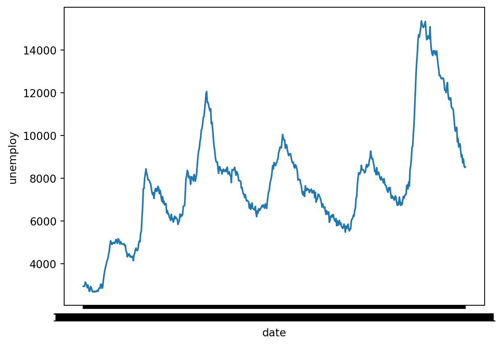
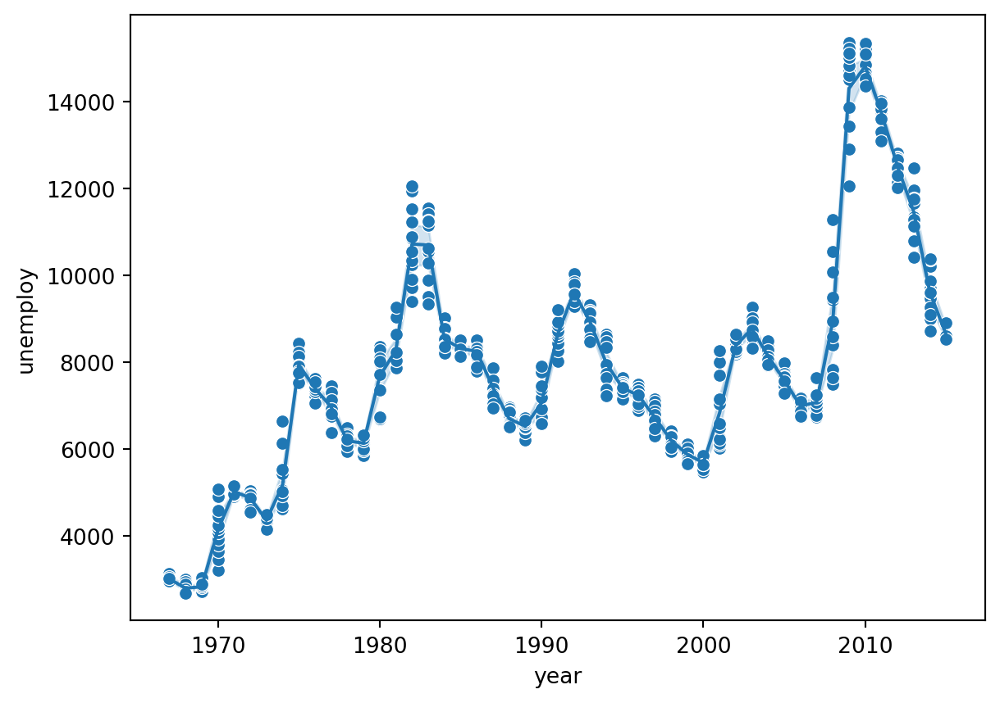
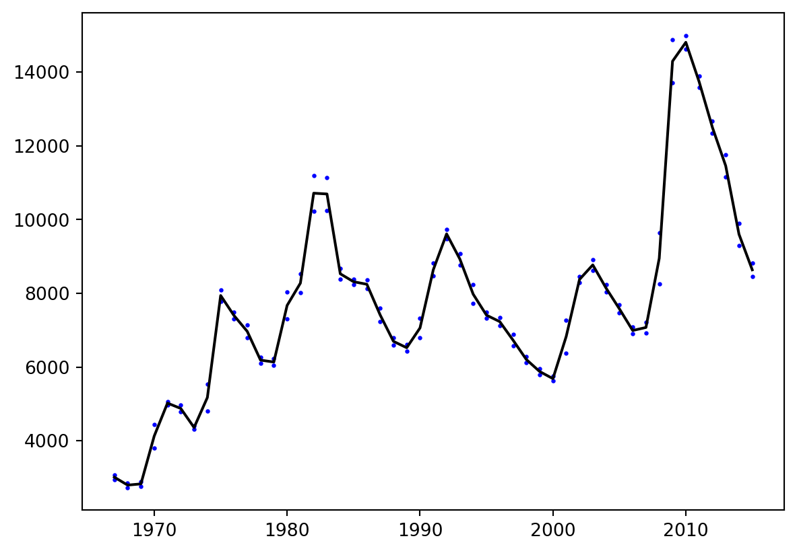
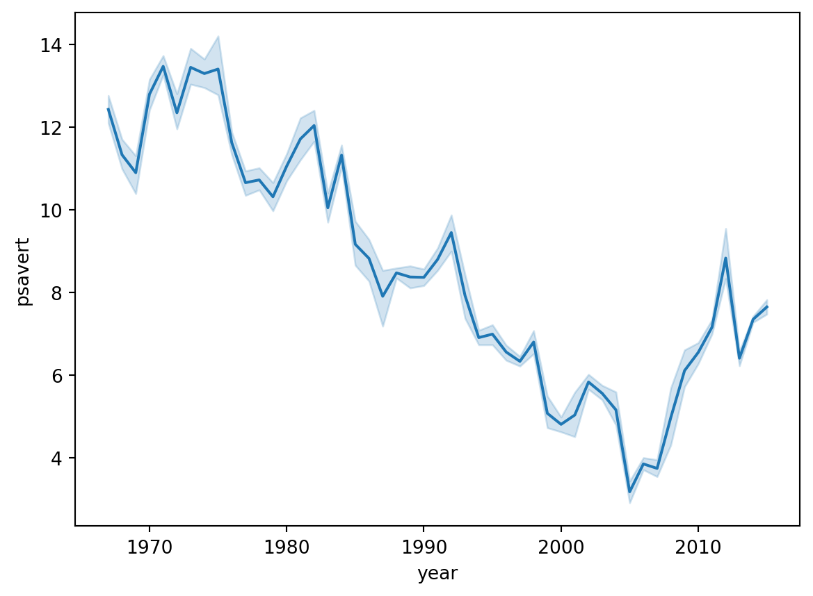
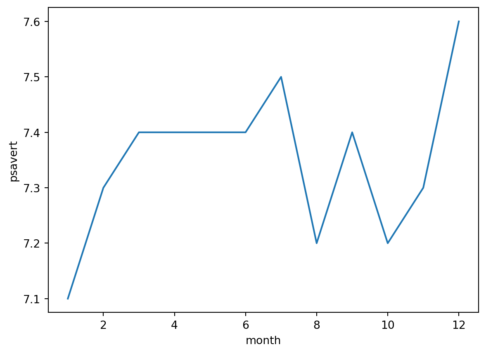

import pandas as pd
import seaborn as sns
import matplotlib.pyplot as plt
import numpy as npCh 8. 그래프 만들기
Line Plot
필요한 패키지 불러오기.
데이터 불러오기.
economics = pd.read_csv("C:/Users/USER/Documents/LS 빅데이터 스쿨/myportfolio/data/economics.csv")
economics.head()
economics.info()<class 'pandas.core.frame.DataFrame'>
RangeIndex: 574 entries, 0 to 573
Data columns (total 6 columns):
# Column Non-Null Count Dtype
--- ------ -------------- -----
0 date 574 non-null object
1 pce 574 non-null float64
2 pop 574 non-null float64
3 psavert 574 non-null float64
4 uempmed 574 non-null float64
5 unemploy 574 non-null int64
dtypes: float64(4), int64(1), object(1)
memory usage: 27.0+ KB시계열 그래프 만들기.
sns.lineplot(data = economics, x ="date", y ="unemploy")
plt.show()
plt.clf()
<Figure size 672x480 with 0 Axes>문자타입의 date를 날짜 시간 타입으로 변환.
economics['date2'] = pd.to_datetime(economics['date'])
economics.info()<class 'pandas.core.frame.DataFrame'>
RangeIndex: 574 entries, 0 to 573
Data columns (total 7 columns):
# Column Non-Null Count Dtype
--- ------ -------------- -----
0 date 574 non-null object
1 pce 574 non-null float64
2 pop 574 non-null float64
3 psavert 574 non-null float64
4 uempmed 574 non-null float64
5 unemploy 574 non-null int64
6 date2 574 non-null datetime64[ns]
dtypes: datetime64[ns](1), float64(4), int64(1), object(1)
memory usage: 31.5+ KB변수의 타입을 날짜 시간으로 바꿔도 값이 달라지지 않음.
economics[['date', 'date2']]| date | date2 | |
|---|---|---|
| 0 | 1967-07-01 | 1967-07-01 |
| 1 | 1967-08-01 | 1967-08-01 |
| 2 | 1967-09-01 | 1967-09-01 |
| 3 | 1967-10-01 | 1967-10-01 |
| 4 | 1967-11-01 | 1967-11-01 |
| ... | ... | ... |
| 569 | 2014-12-01 | 2014-12-01 |
| 570 | 2015-01-01 | 2015-01-01 |
| 571 | 2015-02-01 | 2015-02-01 |
| 572 | 2015-03-01 | 2015-03-01 |
| 573 | 2015-04-01 | 2015-04-01 |
574 rows × 2 columns
변수가 날짜 시간 타입으로 되어 있으면 df.dt로 연, 월, 일 추출 가능
economics['date2'].dt.year.head() # 연 추출
economics['date2'].dt.month.head() # 월 추출
economics['date2'].dt.day.head() # 일 추출
economics['date2'].dt.month_name() # 월 명 추출
economics['date2'].dt.quarter # 분기 추출
economics['quarter'] = economics['date2'].dt.quarter
economics[['date2', 'quarter']]
economics['date2'].dt.day_name() #요일 알아보기 0 Saturday
1 Tuesday
2 Friday
3 Sunday
4 Wednesday
...
569 Monday
570 Thursday
571 Sunday
572 Sunday
573 Wednesday
Name: date2, Length: 574, dtype: object한달을 더할 지 30일을 더할 지 생각해보기.
economics['date2'] + pd.DateOffset(months=1)
economics['date2'] + pd.DateOffset(days=30)
economics['date2'].dt.is_leap_year # 윤년 체크 0 False
1 False
2 False
3 False
4 False
...
569 False
570 False
571 False
572 False
573 False
Name: date2, Length: 574, dtype: bool연도 별 실업률 선그래프
# 연도별로 표본 평균을 구해서 선그래프에 나타남.
economics['year'] = economics['date2'].dt.year
sns.lineplot(data = economics, x = 'year', y = 'unemploy')
sns.scatterplot(data = economics, x = 'year', y = 'unemploy')
plt.show()
plt.clf()
<Figure size 672x480 with 0 Axes>- 표시된 면적은 신뢰구간을 나타낸다.
errorbar = None설정 시 신뢰구간 제외하고 그래프 그려짐.
economics의 연도별 실업률 평균과 표준편차 구하기
df = economics.groupby('year', as_index = False) \
.agg(mean = ('unemploy', 'mean'),
std = ('unemploy' ,'std'),
n = ('unemploy', 'count'))
Z = 1.96
df['left_CI'] = df['mean'] - Z * df['std']/np.sqrt(df['n'])
df['right_CI'] = df['mean'] + Z * df['std']/np.sqrt(df['n'])
df.head()| year | mean | std | n | left_CI | right_CI | |
|---|---|---|---|---|---|---|
| 0 | 1967 | 3012.333333 | 80.176472 | 6 | 2948.178794 | 3076.487872 |
| 1 | 1968 | 2797.416667 | 111.575053 | 12 | 2734.287138 | 2860.546196 |
| 2 | 1969 | 2830.166667 | 121.488371 | 12 | 2761.428150 | 2898.905183 |
| 3 | 1970 | 4127.333333 | 567.821888 | 12 | 3806.057856 | 4448.608811 |
| 4 | 1971 | 5021.666667 | 85.883995 | 12 | 4973.073222 | 5070.260111 |
x = df["year"]
y = df["mean"]
plt.plot(x, y, color= 'black')
plt.scatter(x, df['left_CI'], color = 'blue', s=2)
plt.scatter(x, df['right_CI'], color = 'blue', s=2)
plt.show()
plt.clf()
<Figure size 672x480 with 0 Axes>혼자서 해보기
economics' 데이터를 이용해 분석 문제를 해결해 보세요 Q1.psavert`(개인 저축률)가 시간에 따라 어떻게 변해 왔는지 알아보려고 한다. 연도별 개인 저축률 변화를 나타낸 시계열 그래프를 만들어보자.
economics = pd.read_csv('C:/Users/USER/Documents/LS 빅데이터 스쿨/myportfolio/data/economics.csv')
economics['date2'] = pd.to_datetime(economics['date'])
economics['year'] = economics['date2'].dt.year
sns.lineplot(data = economics, x = 'year', y = 'psavert')
plt.show()
plt.clf()
<Figure size 672x480 with 0 Axes>Q2. 2014년 월별 psavert의 변화를 나타낸 시계열 그래프를 만들어 보세요.
economics['month'] = economics['date2'].dt.month
df_2014 = economics.query("year == 2014")
sns.lineplot(data = df_2014, x = 'month', y = 'psavert')
plt.show()
plt.clf()
<Figure size 672x480 with 0 Axes>